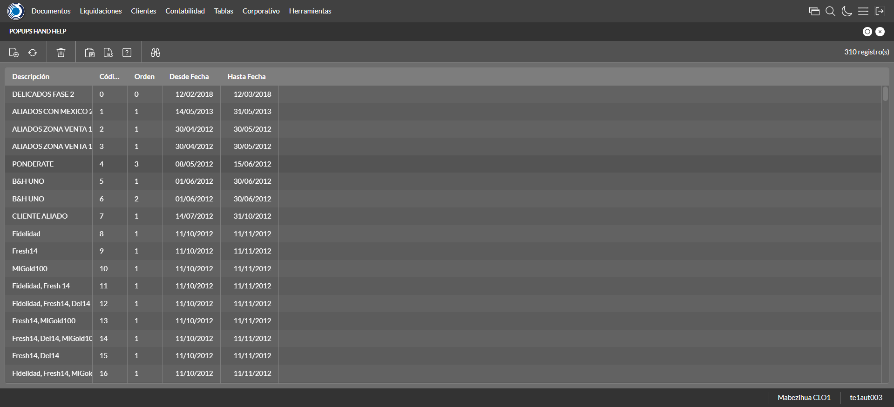
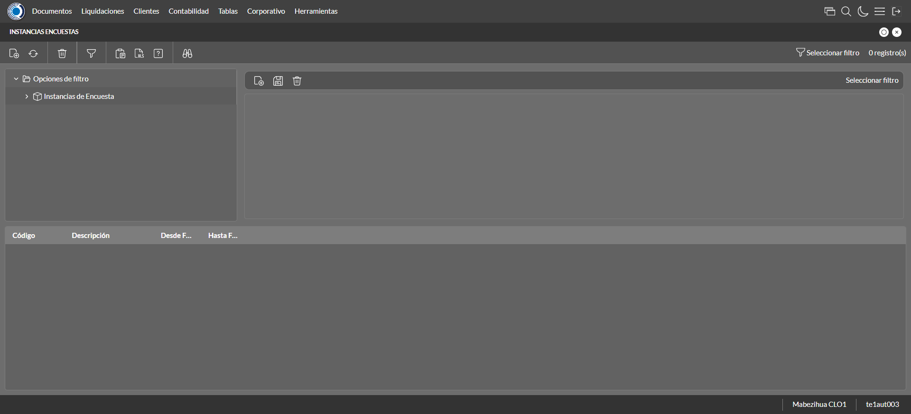
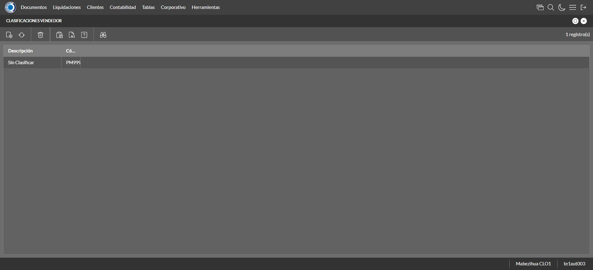
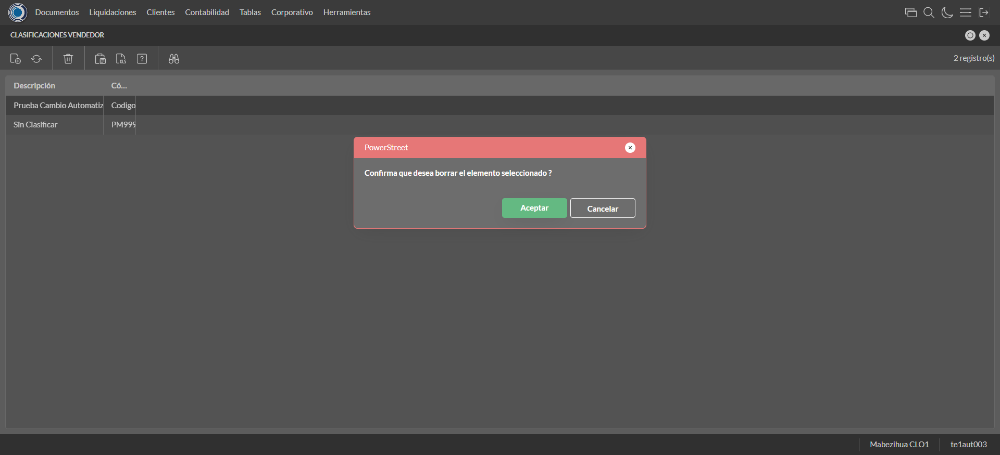

Desarrollado por : Area de Testing PWST
Fecha y hora de inicio : 2022-12-21 12:17:05
Duracion : 0:06:24.738187
Resultado : Total 52，Correctos 51 ，Errores 1 ，Taza de resultado 98.08%
Resumen 98.08% Errores 1 Fallidos 0 Correctos 51 Test realizados 52
| Caso de Prueba | Total | Correctos | Fallido | Error | Detalles | Captura del error |
| ScriptAmarillo.Test: Script Amarillo | 52 | 51 | 0 | 1 | Detalles | |
test |
ft1_1: 2022-12-21 12:17:06,437 - root - INFO - Se abre el chrome
2022-12-21 12:17:07,867 - root - INFO - Entra a la URL
2022-12-21 12:17:08,006 - root - INFO - Maximiza la pantalla
Traceback (most recent call last):
File "C:\Users\jsand\AppData\Local\Programs\Python\Python310\lib\site-packages\selenium-4.4.0-py3.10.egg\selenium\webdriver\remote\switch_to.py", line 87, in frame
frame_reference = self._driver.find_element(By.ID, frame_reference)
File "C:\Users\jsand\AppData\Local\Programs\Python\Python310\lib\site-packages\selenium-4.4.0-py3.10.egg\selenium\webdriver\remote\webdriver.py", line 856, in find_element
return self.execute(Command.FIND_ELEMENT, {
File "C:\Users\jsand\AppData\Local\Programs\Python\Python310\lib\site-packages\selenium-4.4.0-py3.10.egg\selenium\webdriver\remote\webdriver.py", line 434, in execute
self.error_handler.check_response(response)
File "C:\Users\jsand\AppData\Local\Programs\Python\Python310\lib\site-packages\selenium-4.4.0-py3.10.egg\selenium\webdriver\remote\errorhandler.py", line 243, in check_response
raise exception_class(message, screen, stacktrace)
selenium.common.exceptions.NoSuchElementException: Message: no such element: Unable to locate element: {"method":"css selector","selector":"[id="mainFrame"]"}
(Session info: chrome=108.0.5359.125)
Stacktrace:
Backtrace:
(No symbol) [0x00BFF243]
(No symbol) [0x00B87FD1]
(No symbol) [0x00A7D04D]
(No symbol) [0x00AAC0B0]
(No symbol) [0x00AAC22B]
(No symbol) [0x00ADE612]
(No symbol) [0x00AC85D4]
(No symbol) [0x00ADC9EB]
(No symbol) [0x00AC8386]
(No symbol) [0x00AA163C]
(No symbol) [0x00AA269D]
GetHandleVerifier [0x00E99A22+2655074]
GetHandleVerifier [0x00E8CA24+2601828]
GetHandleVerifier [0x00CA8C0A+619850]
GetHandleVerifier [0x00CA7830+614768]
(No symbol) [0x00B905FC]
(No symbol) [0x00B95968]
(No symbol) [0x00B95A55]
(No symbol) [0x00BA051B]
BaseThreadInitThunk [0x76796BD9+25]
RtlGetFullPathName_UEx [0x77B58FD2+1218]
RtlGetFullPathName_UEx [0x77B58F9D+1165]
During handling of the above exception, another exception occurred:
Traceback (most recent call last):
File "C:\Users\jsand\AppData\Local\Programs\Python\Python310\lib\site-packages\selenium-4.4.0-py3.10.egg\selenium\webdriver\remote\switch_to.py", line 90, in frame
frame_reference = self._driver.find_element(By.NAME, frame_reference)
File "C:\Users\jsand\AppData\Local\Programs\Python\Python310\lib\site-packages\selenium-4.4.0-py3.10.egg\selenium\webdriver\remote\webdriver.py", line 856, in find_element
return self.execute(Command.FIND_ELEMENT, {
File "C:\Users\jsand\AppData\Local\Programs\Python\Python310\lib\site-packages\selenium-4.4.0-py3.10.egg\selenium\webdriver\remote\webdriver.py", line 434, in execute
self.error_handler.check_response(response)
File "C:\Users\jsand\AppData\Local\Programs\Python\Python310\lib\site-packages\selenium-4.4.0-py3.10.egg\selenium\webdriver\remote\errorhandler.py", line 243, in check_response
raise exception_class(message, screen, stacktrace)
selenium.common.exceptions.NoSuchElementException: Message: no such element: Unable to locate element: {"method":"css selector","selector":"[name="mainFrame"]"}
(Session info: chrome=108.0.5359.125)
Stacktrace:
Backtrace:
(No symbol) [0x00BFF243]
(No symbol) [0x00B87FD1]
(No symbol) [0x00A7D04D]
(No symbol) [0x00AAC0B0]
(No symbol) [0x00AAC22B]
(No symbol) [0x00ADE612]
(No symbol) [0x00AC85D4]
(No symbol) [0x00ADC9EB]
(No symbol) [0x00AC8386]
(No symbol) [0x00AA163C]
(No symbol) [0x00AA269D]
GetHandleVerifier [0x00E99A22+2655074]
GetHandleVerifier [0x00E8CA24+2601828]
GetHandleVerifier [0x00CA8C0A+619850]
GetHandleVerifier [0x00CA7830+614768]
(No symbol) [0x00B905FC]
(No symbol) [0x00B95968]
(No symbol) [0x00B95A55]
(No symbol) [0x00BA051B]
BaseThreadInitThunk [0x76796BD9+25]
RtlGetFullPathName_UEx [0x77B58FD2+1218]
RtlGetFullPathName_UEx [0x77B58F9D+1165]
During handling of the above exception, another exception occurred:
Traceback (most recent call last):
File "C:\xampp\htdocs\versiones\automatizaciones\AutoPWST\ScriptAmarillo\testCase\ScriptAmarillo.py", line 104, in test
self.driver.switch_to.frame("mainFrame")
File "C:\Users\jsand\AppData\Local\Programs\Python\Python310\lib\site-packages\selenium-4.4.0-py3.10.egg\selenium\webdriver\remote\switch_to.py", line 92, in frame
raise NoSuchFrameException(frame_reference)
selenium.common.exceptions.NoSuchFrameException: Message: mainFrame
|
|
||||
test_000: Ingresa a la base de datos |
pt1_2: 2022-12-21 12:17:11,200 - root - INFO - Escribe el usuario
2022-12-21 12:17:11,348 - root - INFO - Escribe la contraseña
2022-12-21 12:17:11,517 - root - INFO - Se dio clic en el boton ingresar
2022-12-21 12:17:12,322 - root - INFO - Ejecutar Enterprise
2022-12-21 12:17:16,411 - root - INFO - Cambia entre pestañas
|
|
||||
test_001: Ingresa a pantalla Objetivos Diarios |
pt1_3: 2022-12-21 12:17:28,802 - root - INFO - Abre la pantalla de Objetivos Diarios
2022-12-21 12:17:29,365 - root - INFO - La pantalla ejecutada es Lista de precios.
2022-12-21 12:17:29,366 - root - INFO - Captura: C:\xampp\htdocs\versiones\automatizaciones\AutoPWST\ScriptAmarillo\report\img screen：20221221_12_17_29.png
2022-12-21 12:17:29,533 - root - INFO - Se presiona el boton 'Refrescar', para crear un nuevo registro igual al anterior.
2022-12-21 12:17:39,901 - root - INFO - Se presiona el boton 'Nuevo', para crear un nuevo registro.
|

|
||||
test_002: Agregar Objetivos Diarios |
pt1_4: 2022-12-21 12:17:40,463 - root - INFO - Se abrio la pantalla para el ingreso de un registro nuevo.
2022-12-21 12:17:40,507 - root - INFO - El campo 'Vendedor' si se encuentra visible.
2022-12-21 12:17:40,542 - root - INFO - El campo 'Fecha' si se encuentra visible.
2022-12-21 12:17:40,578 - root - INFO - El campo 'Efectividad %' si se encuentra visible.
2022-12-21 12:17:42,063 - root - INFO - Ingresa la efectividad del nuevo registro
2022-12-21 12:17:44,078 - root - INFO - Captura: C:\xampp\htdocs\versiones\automatizaciones\AutoPWST\ScriptAmarillo\report\img screen：20221221_12_17_44.png
2022-12-21 12:17:44,337 - root - INFO - Se hace el cambio de pestaña para continuar con el registro nuevo
2022-12-21 12:17:44,915 - root - INFO - Se presiona el boton 'Nuevo', para crear un nuevo registro.
2022-12-21 12:17:45,462 - root - INFO - El campo 'Grupo Política' si se encuentra visible.
2022-12-21 12:17:45,492 - root - INFO - El campo 'Tipo Objetivo' si se encuentra visible.
2022-12-21 12:17:45,545 - root - INFO - El campo 'Tipo Unidad' si se encuentra visible.
2022-12-21 12:17:45,577 - root - INFO - El campo 'Objetivo Cantidad' si se encuentra visible.
2022-12-21 12:17:45,610 - root - INFO - El campo 'Objetivo Cobertura' si se encuentra visible.
2022-12-21 12:17:47,762 - root - INFO - Ingresa el Objetivo Cantidad del nuevo registro
2022-12-21 12:17:47,844 - root - INFO - Ingresa el Objetivo Cobertura del nuevo registro
2022-12-21 12:17:47,918 - root - INFO - Se da clic en el boton Guardar; se debe crear un nuevo registro.
2022-12-21 12:17:48,103 - root - INFO - Se da clic en el boton Guardar; se debe crear un nuevo registro.
|

|
||||
test_003: Repetir Registro Objetivos Diarios |
pt1_5: 2022-12-21 12:17:48,383 - root - INFO - Se presiona el boton 'Refrescar', para crear un nuevo registro igual al anterior.
2022-12-21 12:17:53,449 - root - INFO - Se presiona el boton 'Nuevo', para crear un nuevo registro igual al anterior.
2022-12-21 12:17:54,027 - root - INFO - Se abrio la pantalla para el ingreso de un registro nuevo.
2022-12-21 12:17:54,076 - root - INFO - El campo 'Vendedor' si se encuentra visible.
2022-12-21 12:17:54,105 - root - INFO - El campo 'Fecha' si se encuentra visible.
2022-12-21 12:17:54,134 - root - INFO - El campo 'Efectividad %' si se encuentra visible.
2022-12-21 12:17:55,585 - root - INFO - Ingresa la efectividad del nuevo registro
2022-12-21 12:17:55,634 - root - INFO - Se da clic en el boton Guardar; se debe crear un nuevo registro.
2022-12-21 12:17:57,641 - root - INFO - Captura: C:\xampp\htdocs\versiones\automatizaciones\AutoPWST\ScriptAmarillo\report\img screen：20221221_12_17_57.png
2022-12-21 12:17:57,881 - root - INFO - Se presiona el boton 'Cerrar', para cerrar el mensaje de duplicidad de llave primaria
2022-12-21 12:17:58,006 - root - INFO - Se presiona el boton 'Cerrar', para cerrar la ventana
|
|||||
test_004: Modifica Objetivos Diarios |
pt1_6: 2022-12-21 12:17:58,117 - root - INFO - Se presiona el boton 'Refrescar', para crear un nuevo registro igual al anterior.
2022-12-21 12:17:59,734 - root - INFO - Se da clic en el registro creado, para proceder a modificarlo.
2022-12-21 12:18:00,344 - root - INFO - Ingresa la efectividad del nuevo registro
2022-12-21 12:18:02,349 - root - INFO - Captura: C:\xampp\htdocs\versiones\automatizaciones\AutoPWST\ScriptAmarillo\report\img screen：20221221_12_18_02.png
2022-12-21 12:18:02,536 - root - INFO - Se hace el cambio de pestaña para continuar con el registro nuevo
2022-12-21 12:18:03,637 - root - INFO - Se da clic en el registro creado, para proceder a modificarlo.
2022-12-21 12:18:05,514 - root - INFO - Ingresa el Objetivo Cantidad del nuevo registro
2022-12-21 12:18:05,616 - root - INFO - Ingresa el Objetivo Cobertura del nuevo registro
2022-12-21 12:18:05,669 - root - INFO - Se da clic en el boton Guardar; se debe crear un nuevo registro.
2022-12-21 12:18:05,870 - root - INFO - Se da clic en el boton Guardar; se debe modificar la informacion del registro.
|

|
||||
test_005: Elimina Objetivos Diarios |
pt1_7: 2022-12-21 12:18:06,107 - root - INFO - Se presiona el boton 'Refrescar', para proceder a eliminar el registro.
2022-12-21 12:18:07,710 - root - INFO - Se da clic en el registro creado, para proceder a eliminarlo.
2022-12-21 12:18:07,775 - root - INFO - Se presiona el boton 'Eliminar', para eliminar el registro.
2022-12-21 12:18:09,778 - root - INFO - Captura: C:\xampp\htdocs\versiones\automatizaciones\AutoPWST\ScriptAmarillo\report\img screen：20221221_12_18_09.png
2022-12-21 12:18:09,953 - root - INFO - Se confirma el eliminado del registro
2022-12-21 12:18:10,087 - root - INFO - Se presiona el boton 'Refrescar', para crear un nuevo registro igual al anterior.
2022-12-21 12:18:10,226 - root - INFO - Se presiona el boton 'Cerrar', para cerrar la pantalla de Categorias Fiscales.
|

|
||||
test_006: Ingresa a pantalla Pop Ups |
pt1_8: 2022-12-21 12:18:11,131 - root - INFO - Abre la pantalla de PopUps
2022-12-21 12:18:11,749 - root - INFO - La pantalla ejecutada es PopUps.
2022-12-21 12:18:12,753 - root - INFO - Captura: C:\xampp\htdocs\versiones\automatizaciones\AutoPWST\ScriptAmarillo\report\img screen：20221221_12_18_12.png
2022-12-21 12:18:14,055 - root - INFO - Se ordenó por codigo.
2022-12-21 12:18:24,488 - root - INFO - Se presiona el boton 'Nuevo', para crear un nuevo registro.
|
 | ||||
test_007: Agregar Pop Ups |
pt1_9: 2022-12-21 12:18:25,028 - root - INFO - Se abrio la pantalla para el ingreso de un registro nuevo.
2022-12-21 12:18:25,060 - root - INFO - El campo 'Codigo' si se encuentra visible.
2022-12-21 12:18:25,089 - root - INFO - El campo 'Orden' si se encuentra visible.
2022-12-21 12:18:25,119 - root - INFO - El campo 'Activo' si se encuentra visible.
2022-12-21 12:18:25,149 - root - INFO - El campo 'Descrición' si se encuentra visible.
2022-12-21 12:18:25,179 - root - INFO - El campo 'Modo Visualización' si se encuentra visible.
2022-12-21 12:18:25,211 - root - INFO - El campo 'Tipo Popup' si se encuentra visible.
2022-12-21 12:18:25,244 - root - INFO - El campo 'Fecha Desde' si se encuentra visible.
2022-12-21 12:18:25,275 - root - INFO - El campo 'Fecha Hasta' si se encuentra visible.
2022-12-21 12:18:25,304 - root - INFO - El campo 'Texto' si se encuentra visible.
2022-12-21 12:18:25,336 - root - INFO - El campo 'Seleccione Imagen' si se encuentra visible.
2022-12-21 12:18:25,383 - root - INFO - Ingresa el codigo del nuevo registro
2022-12-21 12:18:25,482 - root - INFO - Ingresa la orden del nuevo registro
2022-12-21 12:18:26,599 - root - INFO - Hizo click en el checkbox Activo
2022-12-21 12:18:26,733 - root - INFO - Ingresa la descripción del nuevo registro
2022-12-21 12:18:27,085 - root - INFO - Se dió click en la opción Pantalla Held.
2022-12-21 12:18:28,268 - root - INFO - Se dió doble click en el registro de Tipo Pop Up.
2022-12-21 12:18:28,475 - root - INFO - Ingresa el texto del nuevo registro
2022-12-21 12:18:29,489 - root - INFO - Captura: C:\xampp\htdocs\versiones\automatizaciones\AutoPWST\ScriptAmarillo\report\img screen：20221221_12_18_29.png
2022-12-21 12:18:29,705 - root - INFO - Se da clic en el boton Guardar; se debe crear un nuevo registro.
|

|
||||
test_008: Repetir Registro Pop Ups |
pt1_10: 2022-12-21 12:18:29,965 - root - INFO - Se presiona el boton 'Refrescar', para crear un nuevo registro igual al anterior.
2022-12-21 12:18:30,555 - root - INFO - Se presiona el boton 'Nuevo', para crear un nuevo registro igual al anterior.
2022-12-21 12:18:31,105 - root - INFO - Se abrio la pantalla para el ingreso de un registro nuevo.
2022-12-21 12:18:31,131 - root - INFO - El campo 'Codigo' si se encuentra visible.
2022-12-21 12:18:31,158 - root - INFO - El campo 'Orden' si se encuentra visible.
2022-12-21 12:18:31,184 - root - INFO - El campo 'Activo' si se encuentra visible.
2022-12-21 12:18:31,212 - root - INFO - El campo 'Descrición' si se encuentra visible.
2022-12-21 12:18:31,243 - root - INFO - El campo 'Modo Visualización' si se encuentra visible.
2022-12-21 12:18:31,272 - root - INFO - El campo 'Tipo Popup' si se encuentra visible.
2022-12-21 12:18:31,304 - root - INFO - El campo 'Fecha Desde' si se encuentra visible.
2022-12-21 12:18:31,331 - root - INFO - El campo 'Fecha Hasta' si se encuentra visible.
2022-12-21 12:18:31,359 - root - INFO - El campo 'Texto' si se encuentra visible.
2022-12-21 12:18:31,387 - root - INFO - El campo 'Seleccione Imagen' si se encuentra visible.
2022-12-21 12:18:31,433 - root - INFO - Ingresa el codigo del nuevo registro
2022-12-21 12:18:31,500 - root - INFO - Ingresa la orden del nuevo registro
2022-12-21 12:18:32,597 - root - INFO - Hizo click en el checkbox Activo
2022-12-21 12:18:32,770 - root - INFO - Ingresa la descripción del nuevo registro
2022-12-21 12:18:33,157 - root - INFO - Se dió click en la opción Pantalla Hand Held.
2022-12-21 12:18:34,105 - root - INFO - Se dió doble click en el registro de Tipo PopUp.
2022-12-21 12:18:34,285 - root - INFO - Ingresa el texto del nuevo registro
2022-12-21 12:18:34,354 - root - INFO - Se da clic en el boton Guardar; NO se debe crear un nuevo registro.
2022-12-21 12:18:35,358 - root - INFO - Captura: C:\xampp\htdocs\versiones\automatizaciones\AutoPWST\ScriptAmarillo\report\img screen：20221221_12_18_35.png
2022-12-21 12:18:35,613 - root - INFO - Se presiona el boton 'Cerrar', para cerrar el mensaje de duplicidad de llave primaria
2022-12-21 12:18:35,739 - root - INFO - Se presiona el boton 'Cerrar', para cerrar la ventana
|
|||||
test_009: Modifica Pop Ups |
pt1_11: 2022-12-21 12:18:35,878 - root - INFO - Se presiona el boton 'Refrescar', para proceder a modificar el registro.
2022-12-21 12:18:37,528 - root - INFO - Se dió dos veces click en el encabezado para modificar el orden de los registros.
2022-12-21 12:18:39,679 - root - INFO - Se da clic en el registro creado, para proceder a modificarlo.
2022-12-21 12:18:40,304 - root - INFO - Se modifica el contenido del campo Orden
2022-12-21 12:18:41,410 - root - INFO - Hizo click en el checkbox activo
2022-12-21 12:18:41,605 - root - INFO - Se modifica el contenido del campo Descripción
2022-12-21 12:18:41,964 - root - INFO - Se dió click en la opción Ambos.
2022-12-21 12:18:42,868 - root - INFO - Se dió doble click en el registro de Tipo PopUp.
2022-12-21 12:18:43,106 - root - INFO - Se modifica el contenido del campo Texto
2022-12-21 12:18:44,121 - root - INFO - Captura: C:\xampp\htdocs\versiones\automatizaciones\AutoPWST\ScriptAmarillo\report\img screen：20221221_12_18_44.png
2022-12-21 12:18:44,324 - root - INFO - Se da clic en el boton Guardar; se debe modificar la informacion del registro.
|

|
||||
test_010: Elimina PopUps |
pt1_12: 2022-12-21 12:18:44,572 - root - INFO - Se presiona el boton 'Refrescar', para proceder a eliminar el registro.
2022-12-21 12:18:46,161 - root - INFO - Se da clic en el registro creado, para proceder a eliminarlo.
2022-12-21 12:18:47,240 - root - INFO - Se presiona el boton 'Eliminar', para eliminar el registro.
2022-12-21 12:18:47,242 - root - INFO - Captura: C:\xampp\htdocs\versiones\automatizaciones\AutoPWST\ScriptAmarillo\report\img screen：20221221_12_18_47.png
2022-12-21 12:18:47,449 - root - INFO - Se confirma el eliminado del registro
2022-12-21 12:18:47,986 - root - INFO - Se presiona el boton 'Refrescar', para veriicar si el registro ha sido eliminado.
2022-12-21 12:18:48,669 - root - INFO - Se presiona el boton 'Cerrar', para cerrar la pantalla de Pop Ups.
|

|
||||
test_011: Ingresa a pantalla Paquetes Formulario |
pt1_13: 2022-12-21 12:18:49,570 - root - INFO - Abre la pantalla de Paquetes de Formularios
2022-12-21 12:18:50,123 - root - INFO - Captura: C:\xampp\htdocs\versiones\automatizaciones\AutoPWST\ScriptAmarillo\report\img screen：20221221_12_18_50.png
2022-12-21 12:18:50,244 - root - INFO - La pantalla ejecutada es Zonas de Ventas.
2022-12-21 12:19:00,607 - root - INFO - Se presiona el boton 'Nuevo', para crear un nuevo registro.
|

|
||||
test_012: Agregar Paquetes Formulario |
pt1_14: 2022-12-21 12:19:01,172 - root - INFO - Se abrio la pantalla para el ingreso de un registro nuevo.
2022-12-21 12:19:01,207 - root - INFO - El campo 'Número Paquete' si se encuentra visible.
2022-12-21 12:19:01,240 - root - INFO - El campo 'Formulario Inicial' si se encuentra visible.
2022-12-21 12:19:01,277 - root - INFO - El campo 'Cantidad Formularios' si se encuentra visible.
2022-12-21 12:19:02,337 - root - INFO - Captura: C:\xampp\htdocs\versiones\automatizaciones\AutoPWST\ScriptAmarillo\report\img screen：20221221_12_19_02.png
2022-12-21 12:19:02,487 - root - INFO - Ingresa la cantidad de formularios del nuevo registro
2022-12-21 12:19:02,541 - root - INFO - Se da clic en el boton Guardar; se debe crear un nuevo registro.
|

|
||||
test_013: Modifica Paquetes Formulario |
pt1_15: 2022-12-21 12:19:02,735 - root - INFO - Se presiona el boton 'Refrescar', para crear un nuevo registro igual al anterior.
2022-12-21 12:19:04,871 - root - INFO - Se da clic en el registro creado, para proceder a modificarlo.
2022-12-21 12:19:05,884 - root - INFO - Captura: C:\xampp\htdocs\versiones\automatizaciones\AutoPWST\ScriptAmarillo\report\img screen：20221221_12_19_05.png
2022-12-21 12:19:06,083 - root - INFO - Se presiona el boton 'Cerrar', para cerrar la ventana
|

|
||||
test_014: Elimina Paquetes Formulario |
pt1_16: 2022-12-21 12:19:06,207 - root - INFO - Se presiona el boton 'Refrescar', para proceder a eliminar el registro.
2022-12-21 12:19:07,806 - root - INFO - Se da clic en el registro creado, para proceder a eliminarlo.
2022-12-21 12:19:07,867 - root - INFO - Se presiona el boton 'Eliminar', para eliminar el registro.
2022-12-21 12:19:08,869 - root - INFO - Captura: C:\xampp\htdocs\versiones\automatizaciones\AutoPWST\ScriptAmarillo\report\img screen：20221221_12_19_08.png
2022-12-21 12:19:09,047 - root - INFO - Se confirma el eliminado del registro
2022-12-21 12:19:09,229 - root - INFO - Se presiona el boton 'Refrescar', para crear un nuevo registro igual al anterior.
2022-12-21 12:19:09,409 - root - INFO - Se presiona el boton 'Cerrar', para cerrar la pantalla de Categorias Fiscales.
|

|
||||
test_015: Ingresa a pantalla Perfiles Comision |
pt1_17: 2022-12-21 12:19:10,330 - root - INFO - Abre la pantalla de Perfiles de Comisión
2022-12-21 12:19:10,892 - root - INFO - La pantalla ejecutada es Perfiles de Comisión.
2022-12-21 12:19:10,893 - root - INFO - Captura: C:\xampp\htdocs\versiones\automatizaciones\AutoPWST\ScriptAmarillo\report\img screen：20221221_12_19_10.png
2022-12-21 12:19:21,425 - root - INFO - Se presiona el boton 'Nuevo', para crear un nuevo registro.
|

|
||||
test_016: Agregar Perfiles Comision |
pt1_18: 2022-12-21 12:19:21,985 - root - INFO - Se abrio la pantalla para el ingreso de un registro nuevo.
2022-12-21 12:19:22,017 - root - INFO - El campo 'Codigo' si se encuentra visible.
2022-12-21 12:19:22,050 - root - INFO - El campo 'Descrición' si se encuentra visible.
2022-12-21 12:19:22,086 - root - INFO - El campo 'Porcentaje Global' si se encuentra visible.
2022-12-21 12:19:22,116 - root - INFO - El campo 'Con impuesto' si se encuentra visible.
2022-12-21 12:19:22,150 - root - INFO - El campo 'Comisión Repartidor' si se encuentra visible.
2022-12-21 12:19:22,204 - root - INFO - Ingresa el codigo del nuevo registro
2022-12-21 12:19:22,278 - root - INFO - Ingresa la descripción del nuevo registro
2022-12-21 12:19:22,342 - root - INFO - Ingresa el Porcentaje Global del nuevo registro
2022-12-21 12:19:22,419 - root - INFO - Se hizó click en el Checkbox Con impuesto
2022-12-21 12:19:22,494 - root - INFO - Se hizó click en el checkbox Comisión Repartidor
2022-12-21 12:19:23,496 - root - INFO - Captura: C:\xampp\htdocs\versiones\automatizaciones\AutoPWST\ScriptAmarillo\report\img screen：20221221_12_19_23.png
2022-12-21 12:19:23,698 - root - INFO - Se hace el cambio a la pestaña Topes para continuar con el registro nuevo
2022-12-21 12:19:24,285 - root - INFO - Se presiona el boton 'Nuevo', para crear un nuevo registro de Topes.
2022-12-21 12:19:24,839 - root - INFO - El campo 'Moneda' si se encuentra visible.
2022-12-21 12:19:24,870 - root - INFO - El campo 'Tope' si se encuentra visible.
2022-12-21 12:19:24,902 - root - INFO - El campo 'Porcentaje' si se encuentra visible.
2022-12-21 12:19:25,803 - root - INFO - Se dió doble click en el registro de Moneda.
2022-12-21 12:19:25,892 - root - INFO - Ingresa el tope del nuevo registro
2022-12-21 12:19:25,966 - root - INFO - Ingresa el Porcentaje del nuevo registro
2022-12-21 12:19:26,054 - root - INFO - Se da clic en el boton Guardar; se debe crear un nuevo registro de Topes.
2022-12-21 12:19:26,261 - root - INFO - Se hace el cambio a la pestaña Cuenta Articulo para continuar con el registro nuevo
2022-12-21 12:19:26,850 - root - INFO - Se presiona el boton 'Nuevo', para crear un nuevo registro de Cuenta Articulo.
2022-12-21 12:19:27,397 - root - INFO - El campo 'Cuenta' si se encuentra visible.
2022-12-21 12:19:27,431 - root - INFO - El campo 'Artículo' si se encuentra visible.
2022-12-21 12:19:27,482 - root - INFO - El campo 'Porcentaje' si se encuentra visible.
2022-12-21 12:19:28,939 - root - INFO - Se dió doble click en el registro de Cuenta.
2022-12-21 12:19:30,124 - root - INFO - Se dió doble click en el registro de Articulo.
2022-12-21 12:19:30,227 - root - INFO - Ingresa el Porcentaje del nuevo registro
2022-12-21 12:19:30,322 - root - INFO - Se da clic en el boton Guardar; se debe crear un nuevo registro de Cuenta Articulo.
2022-12-21 12:19:30,490 - root - INFO - Se hace el cambio a la pestaña Cuentas para continuar con el registro nuevo
2022-12-21 12:19:31,080 - root - INFO - Se presiona el boton 'Nuevo', para crear un nuevo registro de Cuentas.
2022-12-21 12:19:31,632 - root - INFO - El campo 'Cuenta' si se encuentra visible.
2022-12-21 12:19:31,663 - root - INFO - El campo 'Porcentaje' si se encuentra visible.
2022-12-21 12:19:33,085 - root - INFO - Se dió doble click en el registro de Cuenta.
2022-12-21 12:19:33,182 - root - INFO - Ingresa el Porcentaje del nuevo registro
2022-12-21 12:19:33,282 - root - INFO - Se da clic en el boton Guardar; se debe crear un nuevo registro de Cuentas.
2022-12-21 12:19:33,495 - root - INFO - Se hace el cambio a la pestaña Articulos para continuar con el registro nuevo
2022-12-21 12:19:34,066 - root - INFO - Se presiona el boton 'Nuevo', para crear un nuevo registro de Articulos.
2022-12-21 12:19:34,609 - root - INFO - El campo 'Artículo' si se encuentra visible.
2022-12-21 12:19:34,635 - root - INFO - El campo 'Porcentaje' si se encuentra visible.
2022-12-21 12:19:35,607 - root - INFO - Se dió doble click en el registro de Articulo.
2022-12-21 12:19:35,697 - root - INFO - Ingresa el Porcentaje del nuevo registro
2022-12-21 12:19:35,781 - root - INFO - Se da clic en el boton Guardar; se debe crear un nuevo registro de Articulos.
2022-12-21 12:19:35,940 - root - INFO - Se hace el cambio a la pestaña Tipos de Documento para continuar con el registro nuevo
2022-12-21 12:19:36,516 - root - INFO - Se presiona el boton 'Nuevo', para crear un nuevo registro de Tipo Documento.
2022-12-21 12:19:37,068 - root - INFO - El campo 'Tipo Documento' si se encuentra visible.
2022-12-21 12:19:37,105 - root - INFO - El campo 'Origen' si se encuentra visible.
2022-12-21 12:19:37,136 - root - INFO - El campo 'Signo' si se encuentra visible.
2022-12-21 12:19:37,166 - root - INFO - El campo 'Cancelado' si se encuentra visible.
2022-12-21 12:19:38,045 - root - INFO - Se dió doble click en el registro de Tipo Documento.
2022-12-21 12:19:40,418 - root - INFO - Se dió click en la opción Backoffice.
2022-12-21 12:19:40,811 - root - INFO - Se dió click en la opción Suma.
2022-12-21 12:19:40,885 - root - INFO - Se dió click en el checkbox Cancelado.
2022-12-21 12:19:40,953 - root - INFO - Se da clic en el boton Guardar; se debe crear un nuevo registro de Tipos Documento.
2022-12-21 12:19:41,169 - root - INFO - Se da clic en el boton Guardar; se debe crear un nuevo registro.
|

|
||||
test_017: Repetir Registro Perfiles Comision |
pt1_19: 2022-12-21 12:19:41,415 - root - INFO - Se presiona el boton 'Refrescar', para crear un nuevo registro igual al anterior.
2022-12-21 12:19:41,519 - root - INFO - Se presiona el boton 'Nuevo', para crear un nuevo registro igual al anterior.
2022-12-21 12:19:42,089 - root - INFO - Se abrio la pantalla para el ingreso de un registro nuevo.
2022-12-21 12:19:42,120 - root - INFO - El campo 'Codigo' si se encuentra visible.
2022-12-21 12:19:42,149 - root - INFO - El campo 'Descrición' si se encuentra visible.
2022-12-21 12:19:42,180 - root - INFO - El campo 'Porcentaje Global' si se encuentra visible.
2022-12-21 12:19:42,210 - root - INFO - El campo 'Con impuesto' si se encuentra visible.
2022-12-21 12:19:42,243 - root - INFO - El campo 'Comisión Repartidor' si se encuentra visible.
2022-12-21 12:19:42,290 - root - INFO - Ingresa el codigo del nuevo registro
2022-12-21 12:19:42,362 - root - INFO - Ingresa la descripción del nuevo registro
2022-12-21 12:19:42,418 - root - INFO - Ingresa el Porcentaje Global del nuevo registro
2022-12-21 12:19:42,475 - root - INFO - Se hizó click en el Checkbox Con impuesto
2022-12-21 12:19:42,527 - root - INFO - Se hizó click en el checkbox Comisión Repartidor
2022-12-21 12:19:42,572 - root - INFO - Se da clic en el boton Guardar; No se debe crear un nuevo registro.
2022-12-21 12:19:43,581 - root - INFO - Captura: C:\xampp\htdocs\versiones\automatizaciones\AutoPWST\ScriptAmarillo\report\img screen：20221221_12_19_43.png
2022-12-21 12:19:43,825 - root - INFO - Se presiona el boton 'Cerrar', para cerrar el mensaje de duplicidad de llave primaria
2022-12-21 12:19:43,898 - root - INFO - Se presiona el boton 'Cerrar', para cerrar la ventana
|
|||||
test_018: Modifica Perfiles Comision |
pt1_20: 2022-12-21 12:19:44,019 - root - INFO - Se presiona el boton 'Refrescar', para proceder a modificar el registro.
2022-12-21 12:19:45,622 - root - INFO - Se da doble click en el registro creado, para proceder a modificarlo.
2022-12-21 12:19:46,250 - root - INFO - Se modifica el contenido del campo Descripción
2022-12-21 12:19:46,338 - root - INFO - Se modifica el contenido del campo Porcentaje Global
2022-12-21 12:19:46,399 - root - INFO - Se hizó click en el checkbox Con impuesto
2022-12-21 12:19:46,460 - root - INFO - Se hizó click en el checkbox Comisión Repartidor
2022-12-21 12:19:48,463 - root - INFO - Captura: C:\xampp\htdocs\versiones\automatizaciones\AutoPWST\ScriptAmarillo\report\img screen：20221221_12_19_48.png
2022-12-21 12:19:48,647 - root - INFO - Se da clic en el boton Guardar; se debe modificar la informacion del registro.
|

|
||||
test_019: Elimina Perfiles Comision |
pt1_21: 2022-12-21 12:19:49,007 - root - INFO - Se presiona el boton 'Refrescar', para proceder a eliminar el registro.
2022-12-21 12:19:50,609 - root - INFO - Se da clic en el registro creado, para proceder a eliminarlo.
2022-12-21 12:19:51,695 - root - INFO - Se da clic en la ventana de tope, para proceder a eliminarlo.
2022-12-21 12:19:52,783 - root - INFO - Se da clic en el tope creado, para proceder a eliminarlo.
2022-12-21 12:19:53,412 - root - INFO - Se da clic en la ventana cuenta/articulo, para proceder a eliminarlo.
2022-12-21 12:19:54,501 - root - INFO - Se da clic en la cuenta/articulo creado, para proceder a eliminarlo.
2022-12-21 12:19:55,145 - root - INFO - Se da clic en la ventana cuentas, para proceder a eliminarlo.
2022-12-21 12:19:56,247 - root - INFO - Se da clic en la cuenta creado, para proceder a eliminarlo.
2022-12-21 12:19:56,867 - root - INFO - Se da clic en la cuenta/articulo creado, para proceder a eliminarlo.
2022-12-21 12:19:57,951 - root - INFO - Se da clic en el articulo creado, para proceder a eliminarlo.
2022-12-21 12:19:58,606 - root - INFO - Se da clic en la ventana tipo documento, para proceder a eliminarlo.
2022-12-21 12:19:59,705 - root - INFO - Se da clic en el tipo de documento creado, para proceder a eliminarlo.
2022-12-21 12:19:59,853 - root - INFO - Se da clic en el boton Guardar; se debe crear un nuevo registro.
2022-12-21 12:20:00,421 - root - INFO - Se da clic en el registro creado, para proceder a eliminarlo.
2022-12-21 12:20:00,478 - root - INFO - Se presiona el boton 'Eliminar', para eliminar el registro.
2022-12-21 12:20:00,479 - root - INFO - Captura: C:\xampp\htdocs\versiones\automatizaciones\AutoPWST\ScriptAmarillo\report\img screen：20221221_12_20_00.png
2022-12-21 12:20:00,700 - root - INFO - Se confirma el eliminado del registro
2022-12-21 12:20:00,957 - root - INFO - Se presiona el boton 'Refrescar', para verificar que el registro se ha eliminado.
2022-12-21 12:20:01,141 - root - INFO - Se presiona el boton 'Cerrar', para cerrar la pantalla de Perfiles de Comisión.
|
|||||
test_020: Ingresa a pantalla Politicas de Venta |
pt1_22: 2022-12-21 12:20:02,043 - root - INFO - Abre la pantalla de Politicas de Venta
2022-12-21 12:20:02,591 - root - INFO - La pantalla ejecutada es Politicas de Venta
2022-12-21 12:20:03,607 - root - INFO - Captura: C:\xampp\htdocs\versiones\automatizaciones\AutoPWST\ScriptAmarillo\report\img screen：20221221_12_20_03.png
2022-12-21 12:20:14,185 - root - INFO - Se presiona el boton 'Nuevo', para crear un nuevo registro.
|

|
||||
test_021: Agregar Perfiles Politicas de Venta |
pt1_23: 2022-12-21 12:20:14,790 - root - INFO - Se abrio la pantalla para el ingreso de un registro nuevo.
2022-12-21 12:20:14,820 - root - INFO - El campo 'Codigo' si se encuentra visible.
2022-12-21 12:20:14,850 - root - INFO - El campo 'Codigo Alternativo' si se encuentra visible.
2022-12-21 12:20:14,880 - root - INFO - El campo 'Descrición' si se encuentra visible.
2022-12-21 12:20:14,910 - root - INFO - El campo 'Moneda' si se encuentra visible.
2022-12-21 12:20:14,940 - root - INFO - El campo 'Aplicable en' si se encuentra visible.
2022-12-21 12:20:14,972 - root - INFO - El campo 'Activa' si se encuentra visible.
2022-12-21 12:20:15,002 - root - INFO - El campo 'Aplicación Global' si se encuentra visible.
2022-12-21 12:20:15,052 - root - INFO - Ingresa el codigo del nuevo registro
2022-12-21 12:20:15,118 - root - INFO - Ingresa el codigo alternativo del nuevo registro
2022-12-21 12:20:15,294 - root - INFO - Ingresa la descripción del nuevo registro
2022-12-21 12:20:16,213 - root - INFO - Se dió doble click en el registro de Moneda.
2022-12-21 12:20:16,723 - root - INFO - Se dió click en la opción BackOffice y Mobile.
2022-12-21 12:20:17,836 - root - INFO - Se dió click en el checkbox Activa.
2022-12-21 12:20:17,900 - root - INFO - Se dió click en el checkbox Aplicación Global.
2022-12-21 12:20:17,949 - root - INFO - Se hace el cambio a la pestaña Por Articulo para continuar con el registro nuevo
2022-12-21 12:20:18,539 - root - INFO - Se presiona el boton 'Nuevo', para crear un nuevo registro de Por Articulo.
2022-12-21 12:20:19,148 - root - INFO - El campo 'Artículo' si se encuentra visible.
2022-12-21 12:20:19,179 - root - INFO - El campo 'Artículo a Bonificar' si se encuentra visible.
2022-12-21 12:20:19,208 - root - INFO - El campo 'Cantidad a Bonificar(Packing)' si se encuentra visible.
2022-12-21 12:20:19,238 - root - INFO - El campo 'Cantidad en Bonificación(Unidad)' si se encuentra visible.
2022-12-21 12:20:19,267 - root - INFO - El campo 'Tope Descuento 1' si se encuentra visible.
2022-12-21 12:20:19,299 - root - INFO - El campo 'Tope Descuento 2' si se encuentra visible.
2022-12-21 12:20:19,386 - root - INFO - Ingresa el Articulo del nuevo registro
2022-12-21 12:20:19,491 - root - INFO - Ingresa el Articulo a bonificar del nuevo registro
2022-12-21 12:20:19,596 - root - INFO - Ingresa la Cantidad a Bonificar del nuevo registro
2022-12-21 12:20:19,679 - root - INFO - Ingresa la Cantidad en Bonificación del nuevo registro
2022-12-21 12:20:19,797 - root - INFO - Ingresa el Tope Descuento 1 del nuevo registro
2022-12-21 12:20:19,897 - root - INFO - Ingresa el Tope Descuento 2 del nuevo registro
2022-12-21 12:20:20,915 - root - INFO - Captura: C:\xampp\htdocs\versiones\automatizaciones\AutoPWST\ScriptAmarillo\report\img screen：20221221_12_20_20.png
2022-12-21 12:20:21,152 - root - INFO - Se presiona el boton 'Guardar', para guardar el registro de Por Articulo.
2022-12-21 12:20:21,397 - root - INFO - Se da clic en el boton Guardar; se debe crear un nuevo registro.
|

|
||||
test_022: Repetir Registro Politicas de Venta |
pt1_24: 2022-12-21 12:20:21,718 - root - INFO - Se presiona el boton 'Refrescar', para crear un nuevo registro igual al anterior.
2022-12-21 12:20:21,931 - root - INFO - Se presiona el boton 'Nuevo', para crear un nuevo registro igual al anterior.
2022-12-21 12:20:22,531 - root - INFO - Se abrio la pantalla para el ingreso de un registro nuevo.
2022-12-21 12:20:22,577 - root - INFO - Ingresa el codigo del nuevo registro
2022-12-21 12:20:22,638 - root - INFO - Ingresa el codigo alternativo del nuevo registro
2022-12-21 12:20:22,755 - root - INFO - Ingresa la descripción del nuevo registro
2022-12-21 12:20:23,691 - root - INFO - Se dió doble click en el registro de Moneda.
2022-12-21 12:20:24,180 - root - INFO - Se dió click en la opción BackOffice y Mobile.
2022-12-21 12:20:24,263 - root - INFO - Se dió click en el checkbox Activa.
2022-12-21 12:20:24,322 - root - INFO - Se dió click en el checkbox Aplicación Global.
2022-12-21 12:20:24,416 - root - INFO - Se da clic en el boton Guardar; No se debe crear un nuevo registro.
2022-12-21 12:20:25,419 - root - INFO - Captura: C:\xampp\htdocs\versiones\automatizaciones\AutoPWST\ScriptAmarillo\report\img screen：20221221_12_20_25.png
2022-12-21 12:20:25,708 - root - INFO - Se presiona el boton 'Cerrar', para cerrar el mensaje de duplicidad de llave primaria
2022-12-21 12:20:25,838 - root - INFO - Se presiona el boton 'Cerrar', para cerrar la ventana
|
|||||
test_023: Modifica Politicas de Venta |
pt1_25: 2022-12-21 12:20:25,980 - root - INFO - Se presiona el boton 'Refrescar', para proceder a modificar el registro.
2022-12-21 12:20:27,591 - root - INFO - Se da clic en el registro creado, para proceder a modificarlo.
2022-12-21 12:20:28,271 - root - INFO - Se modifica el contenido del campo Codigo Alternativo
2022-12-21 12:20:28,448 - root - INFO - Se modifica el contenido del campo Descripcion
2022-12-21 12:20:28,504 - root - INFO - Se dió click en el checkbox Aplicación Global.
2022-12-21 12:20:28,574 - root - INFO - Se hace el cambio a la pestaña Por Articulo para continuar con la modificacion del registro
2022-12-21 12:20:29,681 - root - INFO - Se da clic en el registro de Por Articulo, para proceder a modificarlo.
2022-12-21 12:20:30,381 - root - INFO - Se modifica el contenido del campo Articulo
2022-12-21 12:20:30,553 - root - INFO - Se modifica el contenido del campo Articulo a Bonificar
2022-12-21 12:20:30,700 - root - INFO - Se modifica el contenido del campo Cantidad a Bonificar
2022-12-21 12:20:30,852 - root - INFO - Se modifica el contenido del campo Cantidad en Bonificación
2022-12-21 12:20:31,862 - root - INFO - Captura: C:\xampp\htdocs\versiones\automatizaciones\AutoPWST\ScriptAmarillo\report\img screen：20221221_12_20_31.png
2022-12-21 12:20:32,200 - root - INFO - Se presiona el boton 'Guardar', para guardar la modificación del registro de Por Articulo.
2022-12-21 12:20:32,422 - root - INFO - Se da clic en el boton Guardar; se debe modificar la informacion del registro.
|
|||||
test_024: Elimina Politicas de Venta |
pt1_26: 2022-12-21 12:20:32,754 - root - INFO - Se presiona el boton 'Refrescar', para proceder a eliminar el registro.
2022-12-21 12:20:34,367 - root - INFO - Se da clic en el registro creado, para proceder a eliminarlo.
2022-12-21 12:20:35,005 - root - INFO - Se hace el cambio a la pestaña Por Articulo para continuar con la eliminación del registro
2022-12-21 12:20:36,091 - root - INFO - Se da clic en el registro Por Articulo, para proceder a eliminarlo.
2022-12-21 12:20:36,161 - root - INFO - Se presiona el boton 'Eliminar', para eliminar el registro de Por Articulo.
2022-12-21 12:20:36,272 - root - INFO - Se da clic en el boton Guardar; se debe modificar la informacion del registro.
2022-12-21 12:20:36,838 - root - INFO - Se da clic en el registro creado, para proceder a eliminarlo.
2022-12-21 12:20:37,947 - root - INFO - Se presiona el boton 'Eliminar', para eliminar el registro.
2022-12-21 12:20:37,948 - root - INFO - Captura: C:\xampp\htdocs\versiones\automatizaciones\AutoPWST\ScriptAmarillo\report\img screen：20221221_12_20_37.png
2022-12-21 12:20:38,150 - root - INFO - Se confirma el eliminado del registro
2022-12-21 12:20:38,291 - root - INFO - Se presiona el boton 'Refrescar', para verificar si el registro ha sido eliminado.
2022-12-21 12:20:38,432 - root - INFO - Se presiona el boton 'Cerrar', para cerrar la pantalla de Politicas de Venta.
|

|
||||
test_025: Ingresa a pantalla Modelos de Liquidacion |
pt1_27: 2022-12-21 12:20:38,636 - root - INFO - El nombre de la pantalla para la automatización
2022-12-21 12:20:40,075 - root - INFO - La pantalla ejecutada es GRUPO DE POLÍTICAS AD HOC.
2022-12-21 12:20:40,076 - root - INFO - Captura: C:\xampp\htdocs\versiones\automatizaciones\AutoPWST\ScriptAmarillo\report\img screen：20221221_12_20_40.png
2022-12-21 12:20:40,256 - root - INFO - Se presiona el boton 'Nuevo', para crear un nuevo registro.
|

|
||||
test_026: Agregar Perfiles Modelos de Liquidacion |
pt1_28: 2022-12-21 12:20:40,814 - root - INFO - Se abrio la pantalla para el ingreso de un registro nuevo.
2022-12-21 12:20:40,849 - root - INFO - El campo 'Codigo' si se encuentra visible.
2022-12-21 12:20:40,885 - root - INFO - El campo 'Código Alternativo' si se encuentra visible.
2022-12-21 12:20:40,921 - root - INFO - El campo 'Descrición' si se encuentra visible.
2022-12-21 12:20:40,998 - root - INFO - Ingresa el codigo del nuevo registro
2022-12-21 12:20:41,075 - root - INFO - Ingresa el codigo alternativo del nuevo registro
2022-12-21 12:20:41,179 - root - INFO - Ingresa la descripción del nuevo registro
2022-12-21 12:20:43,194 - root - INFO - Captura: C:\xampp\htdocs\versiones\automatizaciones\AutoPWST\ScriptAmarillo\report\img screen：20221221_12_20_43.png
2022-12-21 12:20:43,407 - root - INFO - Se da clic en el boton Guardar; se debe crear un nuevo registro.
|

|
||||
test_027: Repetir Registro Modelos de Liquidacion |
pt1_29: 2022-12-21 12:20:43,588 - root - INFO - Se presiona el boton 'Refrescar', para crear un nuevo registro igual al anterior.
2022-12-21 12:20:43,702 - root - INFO - Se presiona el boton 'Nuevo', para crear un nuevo registro igual al anterior.
2022-12-21 12:20:44,255 - root - INFO - Se abrio la pantalla para el ingreso de un registro nuevo.
2022-12-21 12:20:44,282 - root - INFO - El campo 'Codigo' si se encuentra visible.
2022-12-21 12:20:44,311 - root - INFO - El campo 'Código Alternativo' si se encuentra visible.
2022-12-21 12:20:44,338 - root - INFO - El campo 'Descrición' si se encuentra visible.
2022-12-21 12:20:44,438 - root - INFO - Ingresa el codigo del nuevo registro
2022-12-21 12:20:44,521 - root - INFO - Ingresa el codigo alternativo del nuevo registro
2022-12-21 12:20:44,603 - root - INFO - Ingresa la descripción del nuevo registro
2022-12-21 12:20:44,649 - root - INFO - Se da clic en el boton Guardar; se debe crear un nuevo registro.
2022-12-21 12:20:46,653 - root - INFO - Captura: C:\xampp\htdocs\versiones\automatizaciones\AutoPWST\ScriptAmarillo\report\img screen：20221221_12_20_46.png
2022-12-21 12:20:46,868 - root - INFO - Se presiona el boton 'Cerrar', para cerrar el mensaje de duplicidad de llave primaria
2022-12-21 12:20:46,989 - root - INFO - Se presiona el boton 'Cerrar', para cerrar la ventana
|
|||||
test_028: Modifica Modelos de Liquidacion |
pt1_30: 2022-12-21 12:20:47,118 - root - INFO - Se presiona el boton 'Refrescar', para crear un nuevo registro igual al anterior.
2022-12-21 12:20:48,726 - root - INFO - Se da clic en el registro creado, para proceder a modificarlo.
2022-12-21 12:20:49,358 - root - INFO - Ingresa el codigo alternativo del nuevo registro
2022-12-21 12:20:49,527 - root - INFO - Se modifica el contenido del campo Descripcion
2022-12-21 12:20:51,535 - root - INFO - Captura: C:\xampp\htdocs\versiones\automatizaciones\AutoPWST\ScriptAmarillo\report\img screen：20221221_12_20_51.png
2022-12-21 12:20:51,750 - root - INFO - Se da clic en el boton Guardar; se debe modificar la informacion del registro.
|

|
||||
test_029: Elimina Modelos de Liquidacion |
pt1_31: 2022-12-21 12:20:51,942 - root - INFO - Se presiona el boton 'Refrescar', para proceder a eliminar el registro.
2022-12-21 12:20:53,552 - root - INFO - Se da clic en el registro creado, para proceder a eliminarlo.
2022-12-21 12:20:53,621 - root - INFO - Se presiona el boton 'Eliminar', para eliminar el registro.
2022-12-21 12:20:55,630 - root - INFO - Captura: C:\xampp\htdocs\versiones\automatizaciones\AutoPWST\ScriptAmarillo\report\img screen：20221221_12_20_55.png
2022-12-21 12:20:55,850 - root - INFO - Se confirma el eliminado del registro
2022-12-21 12:20:55,973 - root - INFO - Se presiona el boton 'Refrescar', para crear un nuevo registro igual al anterior.
2022-12-21 12:20:56,114 - root - INFO - Se presiona el boton 'Cerrar', para cerrar la pantalla de Categorias Fiscales.
|

|
||||
test_030: Ingresa a pantalla Politicas AdHoc |
pt1_32: 2022-12-21 12:20:56,357 - root - INFO - El nombre de la pantalla para la automatización
2022-12-21 12:20:57,726 - root - INFO - La pantalla ejecutada es GRUPO DE POLÍTICAS AD HOC.
2022-12-21 12:20:57,727 - root - INFO - Captura: C:\xampp\htdocs\versiones\automatizaciones\AutoPWST\ScriptAmarillo\report\img screen：20221221_12_20_57.png
2022-12-21 12:20:57,977 - root - INFO - Se presiona el boton 'Nuevo', para crear un nuevo registro.
|

|
||||
test_031: Agregar Perfiles Politicas AdHoc |
pt1_33: 2022-12-21 12:20:58,527 - root - INFO - Se abrio la pantalla para el ingreso de un registro nuevo.
2022-12-21 12:20:58,567 - root - INFO - El campo 'Codigo' si se encuentra visible.
2022-12-21 12:20:58,607 - root - INFO - El campo 'Código Alternativo' si se encuentra visible.
2022-12-21 12:20:58,671 - root - INFO - El campo 'Descrición' si se encuentra visible.
2022-12-21 12:20:58,755 - root - INFO - Ingresa el codigo del nuevo registro
2022-12-21 12:20:58,862 - root - INFO - Ingresa el codigo alternativo del nuevo registro
2022-12-21 12:20:58,987 - root - INFO - Ingresa la descripción del nuevo registro
2022-12-21 12:21:00,995 - root - INFO - Captura: C:\xampp\htdocs\versiones\automatizaciones\AutoPWST\ScriptAmarillo\report\img screen：20221221_12_21_00.png
2022-12-21 12:21:01,217 - root - INFO - Se da clic en el boton Guardar; se debe crear un nuevo registro.
|

|
||||
test_032: Repetir Registro Politicas AdHoc |
pt1_34: 2022-12-21 12:21:01,422 - root - INFO - Se presiona el boton 'Refrescar', para crear un nuevo registro igual al anterior.
2022-12-21 12:21:01,553 - root - INFO - Se presiona el boton 'Nuevo', para crear un nuevo registro igual al anterior.
2022-12-21 12:21:02,100 - root - INFO - Se abrio la pantalla para el ingreso de un registro nuevo.
2022-12-21 12:21:02,134 - root - INFO - El campo 'Codigo' si se encuentra visible.
2022-12-21 12:21:02,167 - root - INFO - El campo 'Código Alternativo' si se encuentra visible.
2022-12-21 12:21:02,199 - root - INFO - El campo 'Descrición' si se encuentra visible.
2022-12-21 12:21:02,290 - root - INFO - Ingresa el codigo del nuevo registro
2022-12-21 12:21:02,382 - root - INFO - Ingresa el codigo alternativo del nuevo registro
2022-12-21 12:21:02,494 - root - INFO - Ingresa la descripción del nuevo registro
2022-12-21 12:21:02,562 - root - INFO - Se da clic en el boton Guardar; se debe crear un nuevo registro.
2022-12-21 12:21:04,566 - root - INFO - Captura: C:\xampp\htdocs\versiones\automatizaciones\AutoPWST\ScriptAmarillo\report\img screen：20221221_12_21_04.png
2022-12-21 12:21:04,813 - root - INFO - Se presiona el boton 'Cerrar', para cerrar el mensaje de duplicidad de llave primaria
2022-12-21 12:21:04,953 - root - INFO - Se presiona el boton 'Cerrar', para cerrar la ventana
|
|||||
test_033: Modifica Politicas AdHoc |
pt1_35: 2022-12-21 12:21:05,067 - root - INFO - Se presiona el boton 'Refrescar', para crear un nuevo registro igual al anterior.
2022-12-21 12:21:06,669 - root - INFO - Se da clic en el registro creado, para proceder a modificarlo.
2022-12-21 12:21:07,295 - root - INFO - Ingresa el codigo alternativo del nuevo registro
2022-12-21 12:21:07,456 - root - INFO - Se modifica el contenido del campo Descripcion
2022-12-21 12:21:09,471 - root - INFO - Captura: C:\xampp\htdocs\versiones\automatizaciones\AutoPWST\ScriptAmarillo\report\img screen：20221221_12_21_09.png
2022-12-21 12:21:09,694 - root - INFO - Se da clic en el boton Guardar; se debe modificar la informacion del registro.
|

|
||||
test_034: Elimina Politicas AdHoc |
pt1_36: 2022-12-21 12:21:09,875 - root - INFO - Se presiona el boton 'Refrescar', para proceder a eliminar el registro.
2022-12-21 12:21:11,505 - root - INFO - Se da clic en el registro creado, para proceder a eliminarlo.
2022-12-21 12:21:11,567 - root - INFO - Se presiona el boton 'Eliminar', para eliminar el registro.
2022-12-21 12:21:13,573 - root - INFO - Captura: C:\xampp\htdocs\versiones\automatizaciones\AutoPWST\ScriptAmarillo\report\img screen：20221221_12_21_13.png
2022-12-21 12:21:13,754 - root - INFO - Se confirma el eliminado del registro
2022-12-21 12:21:13,867 - root - INFO - Se presiona el boton 'Refrescar', para crear un nuevo registro igual al anterior.
2022-12-21 12:21:13,987 - root - INFO - Se presiona el boton 'Cerrar', para cerrar la pantalla de Categorias Fiscales.
|

|
||||
test_035: Ingresa a pantalla Programacion de Politicas |
pt1_37: 2022-12-21 12:21:14,872 - root - INFO - Abre la pantalla de Programación de Politicas de Venta
2022-12-21 12:21:15,430 - root - INFO - La pantalla ejecutada es Programación de Politicas de Venta.
2022-12-21 12:21:15,430 - root - INFO - Captura: C:\xampp\htdocs\versiones\automatizaciones\AutoPWST\ScriptAmarillo\report\img screen：20221221_12_21_15.png
2022-12-21 12:21:25,889 - root - INFO - Se presiona el boton 'Nuevo', para crear un nuevo registro.
|

|
||||
test_036: Agregar Perfiles Programacion de Politicas |
pt1_38: 2022-12-21 12:21:26,463 - root - INFO - Se abrio la pantalla para el ingreso de un registro nuevo.
2022-12-21 12:21:26,509 - root - INFO - El campo 'Codigo' si se encuentra visible.
2022-12-21 12:21:26,548 - root - INFO - El campo 'Descrición' si se encuentra visible.
2022-12-21 12:21:26,591 - root - INFO - El campo 'Ejecutar Cuando' si se encuentra visible.
2022-12-21 12:21:26,636 - root - INFO - El campo 'Asignar a' si se encuentra visible.
2022-12-21 12:21:26,683 - root - INFO - El campo 'Aplicar filtros por' si se encuentra visible.
2022-12-21 12:21:26,726 - root - INFO - El campo 'Política de venta' si se encuentra visible.
2022-12-21 12:21:26,769 - root - INFO - El campo 'Observaciones' si se encuentra visible.
2022-12-21 12:21:26,811 - root - INFO - El campo 'Ejecutar generar' si se encuentra visible.
2022-12-21 12:21:26,858 - root - INFO - El campo 'Ejecutar eliminar' si se encuentra visible.
2022-12-21 12:21:26,914 - root - INFO - El campo 'Activa' si se encuentra visible.
2022-12-21 12:21:27,000 - root - INFO - Ingresa el codigo del nuevo registro
2022-12-21 12:21:27,137 - root - INFO - Ingresa la descripción del nuevo registro
2022-12-21 12:21:29,717 - root - INFO - Ingresa la observacion del nuevo registro
2022-12-21 12:21:29,872 - root - INFO - Hizo click en el checkbox
2022-12-21 12:21:29,962 - root - INFO - Hizo click en el checkbox
2022-12-21 12:21:30,052 - root - INFO - Hizo click en el checkbox
2022-12-21 12:21:31,056 - root - INFO - Captura: C:\xampp\htdocs\versiones\automatizaciones\AutoPWST\ScriptAmarillo\report\img screen：20221221_12_21_31.png
2022-12-21 12:21:31,290 - root - INFO - Se da clic en el boton Guardar; se debe crear un nuevo registro.
|

|
||||
test_037: Repetir Registro Programacion de Politicas |
pt1_39: 2022-12-21 12:21:31,561 - root - INFO - Se presiona el boton 'Refrescar', para crear un nuevo registro igual al anterior.
2022-12-21 12:21:31,740 - root - INFO - Se presiona el boton 'Nuevo', para crear un nuevo registro igual al anterior.
2022-12-21 12:21:32,293 - root - INFO - Se abrio la pantalla para el ingreso de un registro nuevo.
2022-12-21 12:21:32,332 - root - INFO - El campo 'Codigo' si se encuentra visible.
2022-12-21 12:21:32,368 - root - INFO - El campo 'Descrición' si se encuentra visible.
2022-12-21 12:21:32,410 - root - INFO - El campo 'Ejecutar Cuando' si se encuentra visible.
2022-12-21 12:21:32,451 - root - INFO - El campo 'Asignar a' si se encuentra visible.
2022-12-21 12:21:32,490 - root - INFO - El campo 'Aplicar filtros por' si se encuentra visible.
2022-12-21 12:21:32,529 - root - INFO - El campo 'Política de venta' si se encuentra visible.
2022-12-21 12:21:32,570 - root - INFO - El campo 'Observaciones' si se encuentra visible.
2022-12-21 12:21:32,615 - root - INFO - El campo 'Ejecutar generar' si se encuentra visible.
2022-12-21 12:21:32,664 - root - INFO - El campo 'Ejecutar eliminar' si se encuentra visible.
2022-12-21 12:21:32,714 - root - INFO - El campo 'Activa' si se encuentra visible.
2022-12-21 12:21:32,792 - root - INFO - Ingresa el codigo del nuevo registro
2022-12-21 12:21:32,921 - root - INFO - Ingresa la descripción del nuevo registro
2022-12-21 12:21:35,739 - root - INFO - Ingresa la observacion del nuevo registro
2022-12-21 12:21:35,827 - root - INFO - Hizo click en el checkbox
2022-12-21 12:21:35,918 - root - INFO - Hizo click en el checkbox
2022-12-21 12:21:36,003 - root - INFO - Hizo click en el checkbox
2022-12-21 12:21:37,007 - root - INFO - Captura: C:\xampp\htdocs\versiones\automatizaciones\AutoPWST\ScriptAmarillo\report\img screen：20221221_12_21_37.png
2022-12-21 12:21:37,268 - root - INFO - Se da clic en el boton Guardar; NO se debe crear un nuevo registro.
2022-12-21 12:21:38,280 - root - INFO - Captura: C:\xampp\htdocs\versiones\automatizaciones\AutoPWST\ScriptAmarillo\report\img screen：20221221_12_21_38.png
2022-12-21 12:21:38,547 - root - INFO - Se presiona el boton 'Cerrar', para cerrar el mensaje de duplicidad de llave primaria
2022-12-21 12:21:38,683 - root - INFO - Se presiona el boton 'Cerrar', para cerrar la ventana
|
|||||
test_038: Modifica Programacion de Politicas |
pt1_40: 2022-12-21 12:21:38,818 - root - INFO - Se presiona el boton 'Refrescar', para crear un nuevo registro igual al anterior.
2022-12-21 12:21:40,435 - root - INFO - Se da clic en el registro creado, para proceder a modificarlo.
2022-12-21 12:21:41,178 - root - INFO - Se modifica el contenido del campo Descripcion
2022-12-21 12:21:43,789 - root - INFO - Ingresa la observacion del nuevo registro
2022-12-21 12:21:43,891 - root - INFO - Hizo click en el checkbox
2022-12-21 12:21:43,993 - root - INFO - Hizo click en el checkbox
2022-12-21 12:21:44,089 - root - INFO - Hizo click en el checkbox
2022-12-21 12:21:45,104 - root - INFO - Captura: C:\xampp\htdocs\versiones\automatizaciones\AutoPWST\ScriptAmarillo\report\img screen：20221221_12_21_45.png
2022-12-21 12:21:45,424 - root - INFO - Se da clic en el boton Guardar; se debe modificar la informacion del registro.
|
|||||
test_039: Elimina Programacion de Politicas |
pt1_41: 2022-12-21 12:21:45,676 - root - INFO - Se presiona el boton 'Refrescar', para proceder a eliminar el registro.
2022-12-21 12:21:47,292 - root - INFO - Se da clic en el registro creado, para proceder a modificarlo.
2022-12-21 12:21:48,364 - root - INFO - Se presiona el boton 'Eliminar', para eliminar el registro.
2022-12-21 12:21:48,366 - root - INFO - Captura: C:\xampp\htdocs\versiones\automatizaciones\AutoPWST\ScriptAmarillo\report\img screen：20221221_12_21_48.png
2022-12-21 12:21:48,586 - root - INFO - Se confirma el eliminado del registro
2022-12-21 12:21:48,773 - root - INFO - Se presiona el boton 'Refrescar', para crear un nuevo registro igual al anterior.
2022-12-21 12:21:48,908 - root - INFO - Se presiona el boton 'Cerrar', para cerrar la pantalla de Categorias Fiscales.
|

|
||||
test_040: Ingresa a pantalla Instancias Encuestas |
pt1_42: 2022-12-21 12:21:49,829 - root - INFO - Abre la pantalla de Instancias Encuestas
2022-12-21 12:21:50,384 - root - INFO - La pantalla ejecutada es Instancias Encuestas.
2022-12-21 12:21:50,385 - root - INFO - Captura: C:\xampp\htdocs\versiones\automatizaciones\AutoPWST\ScriptAmarillo\report\img screen：20221221_12_21_50.png
2022-12-21 12:21:50,626 - root - INFO - Se presiona el boton 'Refrescar', para crear un nuevo registro igual al anterior.
|
 | ||||
test_041: Agregar Perfiles Instancias Encuestas |
pt1_43: 2022-12-21 12:22:12,971 - root - INFO - Se presiona el boton 'Nuevo', para crear un nuevo registro.
2022-12-21 12:22:13,573 - root - INFO - Se abrio la pantalla para el ingreso de un registro nuevo.
2022-12-21 12:22:13,647 - root - INFO - El campo 'Codigo' si se encuentra visible.
2022-12-21 12:22:13,717 - root - INFO - El campo 'Descrición' si se encuentra visible.
2022-12-21 12:22:13,785 - root - INFO - El campo 'Desde Fecha' si se encuentra visible.
2022-12-21 12:22:13,892 - root - INFO - El campo 'Hasta Fecha' si se encuentra visible.
2022-12-21 12:22:13,960 - root - INFO - El campo 'Fecha tope modificación' si se encuentra visible.
2022-12-21 12:22:14,027 - root - INFO - El campo 'Grupo artículos' si se encuentra visible.
2022-12-21 12:22:14,103 - root - INFO - El campo 'Frecuencia' si se encuentra visible.
2022-12-21 12:22:14,172 - root - INFO - El campo 'Grupo entidades multipropósito' si se encuentra visible.
2022-12-21 12:22:14,246 - root - INFO - El campo 'Obligatoria' si se encuentra visible.
2022-12-21 12:22:14,321 - root - INFO - El campo 'Solicitar motivo de no encuesta' si se encuentra visible.
2022-12-21 12:22:14,402 - root - INFO - El campo 'Agrupar tipos de encuesta por modo de respuestas' si se encuentra visible.
2022-12-21 12:22:14,561 - root - INFO - Ingresa el codigo del nuevo registro
2022-12-21 12:22:14,971 - root - INFO - Ingresa la descripción del nuevo registro
2022-12-21 12:22:20,678 - root - INFO - Captura: C:\xampp\htdocs\versiones\automatizaciones\AutoPWST\ScriptAmarillo\report\img screen：20221221_12_22_20.png
2022-12-21 12:22:20,980 - root - INFO - Se hace el cambio de pestaña para continuar con el registro nuevo
2022-12-21 12:22:21,623 - root - INFO - Se presiona el boton 'Nuevo', para crear un nuevo registro.
2022-12-21 12:22:22,255 - root - INFO - El campo 'Tipo Encuesta' si se encuentra visible.
2022-12-21 12:22:22,330 - root - INFO - El campo 'Orden' si se encuentra visible.
2022-12-21 12:22:23,802 - root - INFO - Ingresa la Orden del nuevo registro
2022-12-21 12:22:23,990 - root - INFO - Se da clic en el boton Guardar; se debe crear un nuevo registro.
2022-12-21 12:22:24,290 - root - INFO - Se da clic en el boton Guardar; se debe crear un nuevo registro.
|
|||||
test_042: Repetir Registro Instancias Encuestas |
pt1_44: 2022-12-21 12:22:24,565 - root - INFO - Se presiona el boton 'Refrescar', para crear un nuevo registro igual al anterior.
2022-12-21 12:22:26,693 - root - INFO - Se presiona el boton 'Nuevo', para crear un nuevo registro igual al anterior.
2022-12-21 12:22:27,269 - root - INFO - Se abrio la pantalla para el ingreso de un registro nuevo.
2022-12-21 12:22:27,325 - root - INFO - El campo 'Codigo' si se encuentra visible.
2022-12-21 12:22:27,384 - root - INFO - El campo 'Descrición' si se encuentra visible.
2022-12-21 12:22:27,444 - root - INFO - El campo 'Desde Fecha' si se encuentra visible.
2022-12-21 12:22:27,504 - root - INFO - El campo 'Hasta Fecha' si se encuentra visible.
2022-12-21 12:22:27,563 - root - INFO - El campo 'Fecha tope modificación' si se encuentra visible.
2022-12-21 12:22:27,619 - root - INFO - El campo 'Grupo artículos' si se encuentra visible.
2022-12-21 12:22:27,674 - root - INFO - El campo 'Frecuencia' si se encuentra visible.
2022-12-21 12:22:27,732 - root - INFO - El campo 'Grupo entidades multipropósito' si se encuentra visible.
2022-12-21 12:22:27,792 - root - INFO - El campo 'Obligatoria' si se encuentra visible.
2022-12-21 12:22:27,855 - root - INFO - El campo 'Solicitar motivo de no encuesta' si se encuentra visible.
2022-12-21 12:22:27,919 - root - INFO - El campo 'Agrupar tipos de encuesta por modo de respuestas' si se encuentra visible.
2022-12-21 12:22:28,047 - root - INFO - Ingresa el codigo del nuevo registro
2022-12-21 12:22:28,326 - root - INFO - Ingresa la descripción del nuevo registro
2022-12-21 12:22:31,400 - root - INFO - Se da clic en el boton Guardar; se debe crear un nuevo registro.
2022-12-21 12:22:33,406 - root - INFO - Captura: C:\xampp\htdocs\versiones\automatizaciones\AutoPWST\ScriptAmarillo\report\img screen：20221221_12_22_33.png
2022-12-21 12:22:33,848 - root - INFO - Se presiona el boton 'Cerrar', para cerrar el mensaje de duplicidad de llave primaria
2022-12-21 12:22:33,986 - root - INFO - Se presiona el boton 'Cerrar', para cerrar la ventana
|
|||||
test_043: Modifica Instancias Encuestas |
pt1_45: 2022-12-21 12:22:34,132 - root - INFO - Se presiona el boton 'Refrescar', para crear un nuevo registro igual al anterior.
2022-12-21 12:22:36,823 - root - INFO - Se da clic en el registro creado, para proceder a modificarlo.
2022-12-21 12:22:37,674 - root - INFO - Se modifica el contenido del campo Descripcion
2022-12-21 12:22:39,688 - root - INFO - Captura: C:\xampp\htdocs\versiones\automatizaciones\AutoPWST\ScriptAmarillo\report\img screen：20221221_12_22_39.png
2022-12-21 12:22:44,863 - root - INFO - Captura: C:\xampp\htdocs\versiones\automatizaciones\AutoPWST\ScriptAmarillo\report\img screen：20221221_12_22_44.png
2022-12-21 12:22:45,169 - root - INFO - Se hace el cambio de pestaña para continuar con el registro nuevo
2022-12-21 12:22:46,283 - root - INFO - Se da clic en el registro creado, para proceder a modificarlo.
2022-12-21 12:22:46,386 - root - INFO - Se presiona el boton 'Eliminar', para eliminar el registro.
2022-12-21 12:22:46,508 - root - INFO - Se presiona el boton 'Nuevo', para crear un nuevo registro.
2022-12-21 12:22:48,369 - root - INFO - Ingresa la Orden del nuevo registro
2022-12-21 12:22:48,599 - root - INFO - Se da clic en el boton Guardar; se debe crear un nuevo registro.
2022-12-21 12:22:48,924 - root - INFO - Se da clic en el boton Guardar; se debe modificar la informacion del registro.
|

|
||||
test_044: Elimina Instancias Encuestas |
pt1_46: 2022-12-21 12:22:50,122 - root - INFO - Se presiona el boton 'Refrescar', para proceder a eliminar el registro.
2022-12-21 12:22:52,788 - root - INFO - Se da clic en el registro creado, para proceder a eliminarlo.
2022-12-21 12:22:53,458 - root - INFO - Se hace el cambio de pestaña para continuar con el registro nuevo
2022-12-21 12:22:59,215 - root - INFO - Se da clic en el registro creado, para proceder a modificarlo.
2022-12-21 12:22:59,345 - root - INFO - Se presiona el boton 'Eliminar', para eliminar el registro.
2022-12-21 12:22:59,492 - root - INFO - Se da clic en el boton Guardar; se debe modificar la informacion del registro.
2022-12-21 12:23:01,836 - root - INFO - Se da clic en el registro creado, para proceder a eliminarlo.
2022-12-21 12:23:01,961 - root - INFO - Se presiona el boton 'Eliminar', para eliminar el registro.
2022-12-21 12:23:03,971 - root - INFO - Captura: C:\xampp\htdocs\versiones\automatizaciones\AutoPWST\ScriptAmarillo\report\img screen：20221221_12_23_03.png
2022-12-21 12:23:04,273 - root - INFO - Se confirma el eliminado del registro
2022-12-21 12:23:04,710 - root - INFO - Se presiona el boton 'Refrescar', para crear un nuevo registro igual al anterior.
2022-12-21 12:23:05,129 - root - INFO - Se presiona el boton 'Cerrar', para cerrar la pantalla de Categorias Fiscales.
|
|||||
test_045: Ingresa a pantalla Clasificacion Vendedor |
pt1_47: 2022-12-21 12:23:06,102 - root - INFO - Abre la pantalla de Clasificación Vendedor
2022-12-21 12:23:06,681 - root - INFO - La pantalla ejecutada es Clasificación Vendedor.
2022-12-21 12:23:06,682 - root - INFO - Captura: C:\xampp\htdocs\versiones\automatizaciones\AutoPWST\ScriptAmarillo\report\img screen：20221221_12_23_06.png
2022-12-21 12:23:07,057 - root - INFO - Se presiona el boton 'Nuevo', para crear un nuevo registro.
|
 | ||||
test_046: Agregar Perfiles Clasificacion Vendedor |
pt1_48: 2022-12-21 12:23:07,647 - root - INFO - Se abrio la pantalla para el ingreso de un registro nuevo.
2022-12-21 12:23:07,768 - root - INFO - Ingresa el codigo del nuevo registro
2022-12-21 12:23:07,946 - root - INFO - Ingresa la descripción del nuevo registro
2022-12-21 12:23:07,947 - root - INFO - Captura: C:\xampp\htdocs\versiones\automatizaciones\AutoPWST\ScriptAmarillo\report\img screen：20221221_12_23_07.png
2022-12-21 12:23:08,313 - root - INFO - Se da clic en el boton Guardar; se debe crear un nuevo registro.
|

|
||||
test_047: Repetir Registro Clasificacion Vendedor |
pt1_49: 2022-12-21 12:23:08,516 - root - INFO - Se presiona el boton 'Refrescar', para crear un nuevo registro igual al anterior.
2022-12-21 12:23:10,583 - root - INFO - Se presiona el boton 'Nuevo', para crear un nuevo registro igual al anterior.
2022-12-21 12:23:11,164 - root - INFO - Se abrio la pantalla para el ingreso de un registro nuevo.
2022-12-21 12:23:11,257 - root - INFO - Ingresa el codigo del nuevo registro
2022-12-21 12:23:11,376 - root - INFO - Ingresa la descripción del nuevo registro
2022-12-21 12:23:11,458 - root - INFO - Se da clic en el boton Guardar; se debe crear un nuevo registro.
2022-12-21 12:23:13,470 - root - INFO - Captura: C:\xampp\htdocs\versiones\automatizaciones\AutoPWST\ScriptAmarillo\report\img screen：20221221_12_23_13.png
2022-12-21 12:23:13,764 - root - INFO - Se presiona el boton 'Cerrar', para cerrar el mensaje de duplicidad de llave primaria
2022-12-21 12:23:13,905 - root - INFO - Se presiona el boton 'Cerrar', para cerrar la ventana
|
|||||
test_048: Modifica Clasificacion Vendedor |
pt1_50: 2022-12-21 12:23:14,034 - root - INFO - Se presiona el boton 'Refrescar', para crear un nuevo registro igual al anterior.
2022-12-21 12:23:16,624 - root - INFO - Se da clic en el registro creado, para proceder a modificarlo.
2022-12-21 12:23:17,389 - root - INFO - Se modifica el contenido del campo Descripcion
2022-12-21 12:23:17,390 - root - INFO - Captura: C:\xampp\htdocs\versiones\automatizaciones\AutoPWST\ScriptAmarillo\report\img screen：20221221_12_23_17.png
2022-12-21 12:23:17,751 - root - INFO - Se da clic en el boton Guardar; se debe modificar la informacion del registro.
|
|||||
test_049: Elimina Clasificacion Vendedor |
pt1_51: 2022-12-21 12:23:18,068 - root - INFO - Se presiona el boton 'Refrescar', para proceder a eliminar el registro.
2022-12-21 12:23:20,643 - root - INFO - Se da clic en el registro creado, para proceder a eliminarlo.
2022-12-21 12:23:20,763 - root - INFO - Se presiona el boton 'Eliminar', para eliminar el registro.
2022-12-21 12:23:22,768 - root - INFO - Captura: C:\xampp\htdocs\versiones\automatizaciones\AutoPWST\ScriptAmarillo\report\img screen：20221221_12_23_22.png
2022-12-21 12:23:23,054 - root - INFO - Se confirma el eliminado del registro
2022-12-21 12:23:23,196 - root - INFO - Se presiona el boton 'Refrescar', para crear un nuevo registro igual al anterior.
2022-12-21 12:23:25,273 - root - INFO - Se presiona el boton 'Cerrar', para cerrar la pantalla de Categorias Fiscales.
|
 | ||||
test_050: Cerrar_Navegador |
pt1_52: 2022-12-21 12:23:29,924 - root - INFO - Se cierra chrome
|
|
||||
| Caso de prueba | 52 | 51 | 0 | 1 | Taza de resultado：98.08% | |